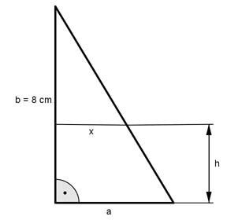

Aufgabe 90 Wie groß muss h sein, wenn sich die Fläche des Trapezes zur Fläche des darüber liegenden Dreiecks wie 3 : 2 verhält?

Fläche des kleinen Dreiecks = AD Fläche des Trapezes = AT AT 3 ---- = --- |*AD AD 2 3 AT = --- AD 2 a * b ------ = AT + AD 2 a * b 3 ------- = --- AD + AD |*2 2 2 a * b = 3AD + 2AD | :b 5AD a = ----- 2 Strahlensatz: a : x = b : (b – h) a b --- = ------- x b - h Über Kreuz multipliziert: a * (b – h) = x * b |:b a * (b – h) ------------- = x b a + x ------- * h = AT 2 a und x ersetzt: 5AD 5AD * (b – h) ----- + ---------------- b b2 3 ------------------------- * h = --- AD 2 2 5AD * b + 5AD * b – 5AD * h 3 ----------------------------- * h = --- AD | :AD 2b2 2 5b + 5b – 5h ---------------- * h = 1,5 |*2b2 2b2 10bh – 5h2 = 3b2 |+5h2 10bh = 3b2 + 5h2 |-10bh 5h2 - 10bh + 3b2 = 0 |:5 h2 - 2bh + 0,6b2 =0 p, q – Formel p = -2b; q = 0,6b2 x1,2 = x1,2 = b ± x1,2 = b ± h1,2 = 8 ± 5,1 h1 = 8 + 5,1 = 13,1 keine Lösung > b h2 = 8 – 5,1 = 2,9 cm